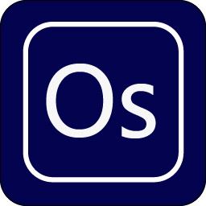

What is Osmium?
Osmium is among the rarest elements in the Earth's crust, making up only 50 parts per trillion. It is a hard, brittle, blue-gray metal, and the densest stable element—about twice as dense as lead and Its stiffness surpasses that of a diamond.
Osmium runs on the Alpaca.Markets API. Alpaca is a forward-thinking, api-first brokerage that makes it possible for custom interfaces like Osmium to exist.
While osmium itself is valuable, its true power often lies in its interactions with other elements. For instance, when alloyed with platinum, it creates some of the hardest, most durable materials available.
Osmium is best used with dedicated tools for scanning, fundamental analysis, charting, news, etc.
Osmium is a real-time trading desk for managing a portfolio of stock and ETF markets over time. The focus is on the allocation of equity and the execution of orders with a precise foreknowledge of how each order will effect the equity balance. Osmium is a distraction-free, easy-to-use trading desktop.
Osmium sits on Alpaca. To use it, you will need an Alpaca account. It can be a Live or Paper account however, it is recommended that a paper account is used to initially evaluate the software and get a feel for its responsiveness and how it presents data. The "unlimited" Alpaca data subscription is highly recommended.
This software may be used under the
Apache 2 license AS IS. Here is a link:
Apache 2.0 licenseNo warranty or guarantee of functionality is made. Trading any security is risky and
Osmium is to be used at your own risk.
